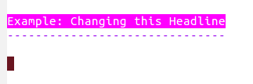
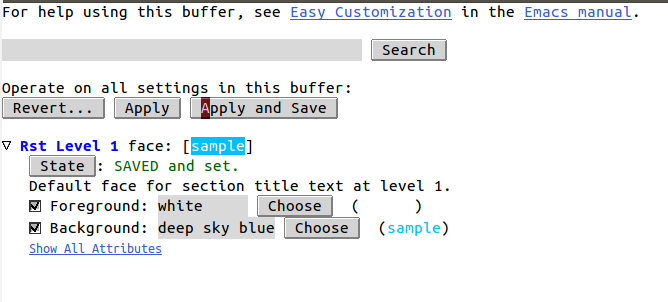
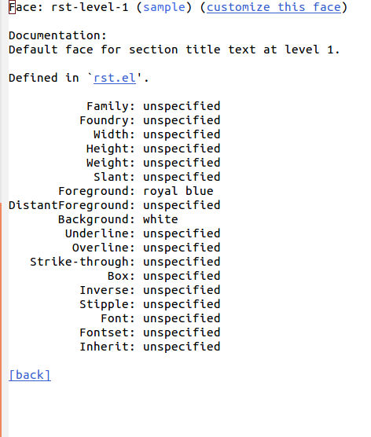

Changing Emacs Font Colors
I prefer a white background with dark text when I work, which generally works well-enough but some modes in Emacs create foreground-background colors that make it hard to impossible to read. The simplest way that I know of to change a font's colors is with the customize-face command.
Example: Changing This Headline
The original color for this headline in rst-mode was magenta (not by default, I had changed things a couple of times).
To change it I moved my cursor onto the headline and entered M-x customize-face.

This brings up a prompt so you can enter the particular face you want to change. I didn't know the name that I wanted to change but since my cursor was already over the headline, it used that as the default so I could just hit enter to select it.

As you can see the headline-face in this case is rst-level-1.
After I hit enter it took me to a dialog page to let me change the settings for this face.

In this case I just wanted to change the background color so I clicked on the bottom Choose button. You can enter values directly if you have something in mind, but I didn't so this seemed like the easier way to do it, since it brings up a color picker which lets you see what the colors look like.

I decided to go with deep sky blue so I moved my cursor over that row in the color picker and hit enter. This closes the color-picker and updates the color in the customization dialog.

This changes the dialog but doesn't actually change the settings. To do that you have to move you cursor to Apply and Save and hit enter. This updates the sample color so you can see what it now looks like.
When I then switched back to my original editing buffer, the headline now had a blue background.

Which doesn't look as nice as I thought it would so I changed again. Same steps, different colors.
Describe Face
Another useful command is M-x describe-face which shows you the settings for a face. This is what it showed after I made another change to my headline color.
If you click on customize this face up at the top-right of the window it takes you to the same dialog that the M-x customize-face command takes you to.